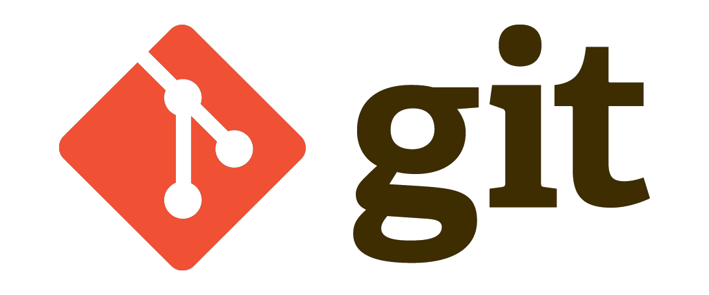
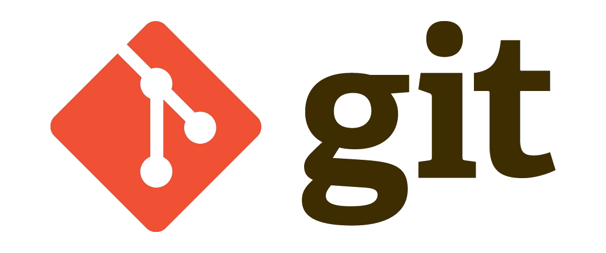

ABOUT ME
John D. Evans
I have always had a keen interest in technology and a desire and passion to create; hence my decision to pursue a career in engineering. Over the years I have developed skills to effectively deliver change enabled by new and legacy technologies through the integration of resources. However my passion to create remains, and I want to apply my energy to learning new skills in coding, while driving delivery of new products and services, using my project management skills.
PROFESSIONAL EXPERIENCE
Web Developer, General Assembly (Sep 2016 - Jan 2017)
Use of tools and techniques to create full stack web applications, enabling rapid development and deployment to achieve MVP. Problem solving techniques, such as brainstorming, peer coding, debugging, use of Google, and Stack Overflow. Deployment into production of Responsive, MEAN stack, RESTful solutions. Management of Back End and Front End resources. Use of GitHub enabling collaborative, output of deliverables. Use of Agile methodologies, and tools including, prototyping, use-cases, wire-framing, Trello, project sprints and daily stand-ups. Digital Marketing/Google Analytics, User Experience Design.
Accounts Projects and Portfolio Lead, Hewlett Packard Enterprise (Oct 2013 – Jul 2016)
Directed IT change programmes for C-Level account leaders within the Healthcare, Manufacturing and Transport & Distribution sectors, working as an integrator of multiple resources over the full project and programme lifecycle to deliver technology changes to time, cost and quality.
Led turnaround of challenging programme; delivering change projects on behalf of £Multi-million contract for a London NHS Trust account. I established an improved project controls and governance process based on PRINCE2, MSP, and elements of AgilePM/Lean 6 Sigma, achieving a 54% improvement in schedule delays and lowered cost overspend by 38%. This approach delivered solutions and upgrades to a 3000 desktop; 24/7/365 operation.
EDUCATION
General Assembly: Web Development Immersive Programme
University College London: M.Sc(Eng.) - Information Technology
University of the West Indies: B.Sc(Hons.) - Mechanical Engineering
KEY SKILLS:
Full Stack Web Development


 

Agile Project & Programme Management
Benifits realisation, Delivery management, MoSCoW Prioritisation, Timeboxing and Project sprints, Risk Management.
Change Management
Voice of the Customer, Voice of the Business, Waste identification, Management of Change frameworks and techniques.
Implemented key business deliverables across £Multi-million, multi-year contracts within complex multi-national organisations.
VOLUNTARY WORK
Trustee at local church, leading activities for children and young people. I really enjoy fostering young people’s potential; seeing them grow into capable young adults ready to take on new challenges.
Currently working on updating and revision of website for my local church
KEY INTERESTS
Sci-fi movies; especially those that explore the nature of man’s relationship with machine intelligence. For example BladeRunner, West World and Humans.
Resently completed a 10K run in London for Cancer Research and regular participant in 5k parkrun.